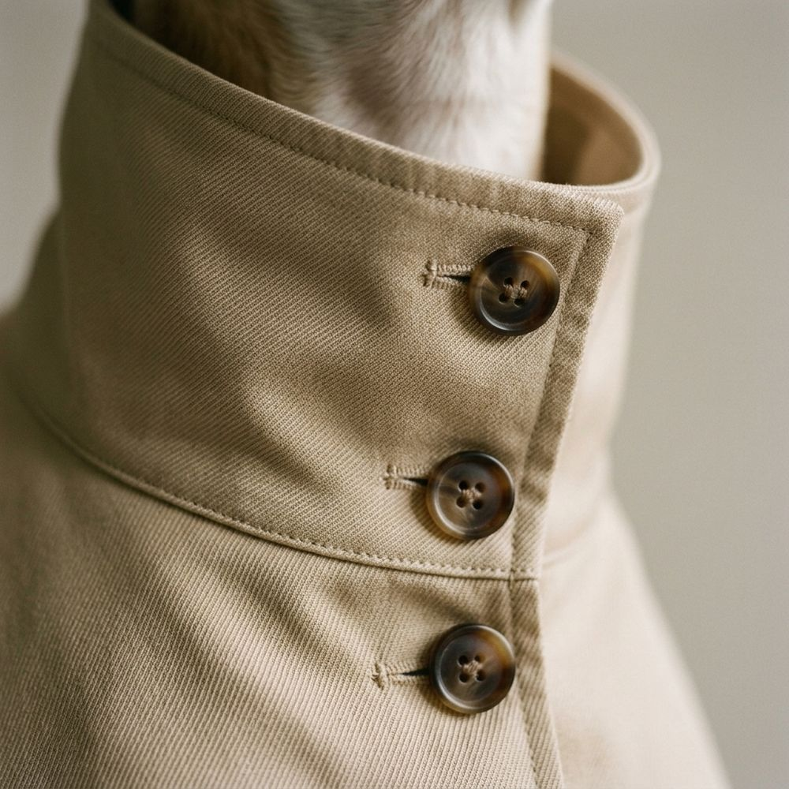

Madrid · Guimarães · desde 2019
La casa de costura para perros.
Maison Canis diseña, corta y confecciona a mano prendas para perro sobre las medidas reales de cada animal. Costura para quien camina a nuestro lado.
La Maison
Manifiesto
No vestimos perros. Vestimos a quienes nos acompañan.
Maison Canis nace de una convicción: lo que se hace para quien más queremos merece el mismo rigor que la mejor costura. Cada prenda se dibuja sobre medidas reales, se confecciona a mano y se cuida de por vida.
El savoir-faire
Un oficio que no tiene prisa.
La colección de invierno
Piezas para los días de frío.
La colección de invierno reúne una gabardina, un jersey y un abrigo. Cada una existe en un solo tono, elegido para no pasar de moda, y se corta en cinco tallas sobre las medidas de su perro.
El tejido, de cerca
Tres materiales. Tres relieves.
Arrastre la muestra para girarla y mueva el cursor para cambiar la luz: el cruce del sarga, el punto del cachemir y el acolchado en retícula se entienden mejor con las manos que con palabras.

Año en que Maison Canis abrió su primer taller, en Madrid.
Tallas, definidas por medidas de pecho y lomo, no por peso.
Costurera por prenda, de principio a fin. Sus iniciales van en la etiqueta.
Reparamos cualquier prenda Maison Canis, sea cual sea su edad.
Atelier
La talla se mide, no se supone.
Dos medidas bastan: el contorno de pecho y el largo de lomo. Indíquelas y le recomendamos la talla que mejor se ajusta a su perro. Si necesita algo distinto, el atelier le atiende personalmente.
Envío asegurado
Gratuito en todos los pedidos, en estuche y papel de seda.
Cambio de talla
Sin coste durante 30 días, también si ya la ha probado.
Reparación de por vida
Arreglamos cualquier prenda Maison Canis, sea cual sea su edad.
Atención personal
Escríbanos y le responderá una persona del taller en menos de un día laborable.